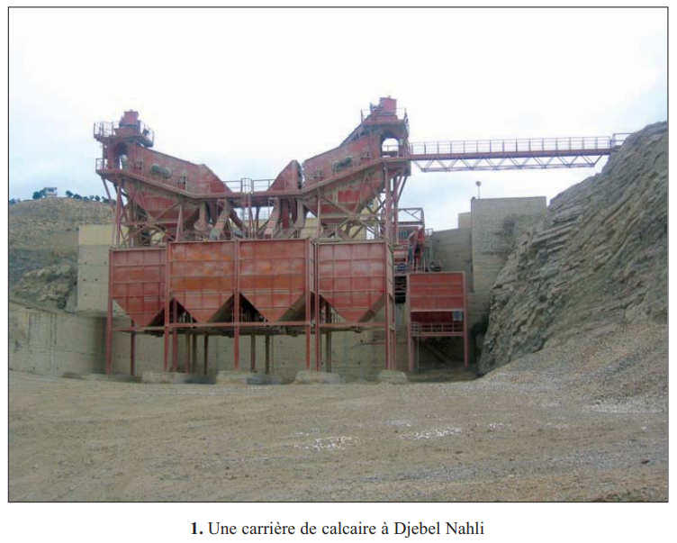
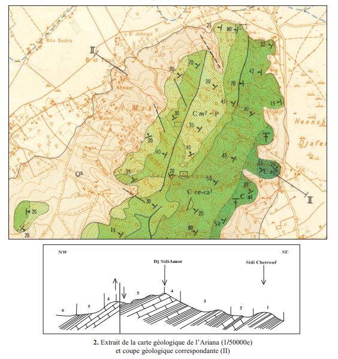
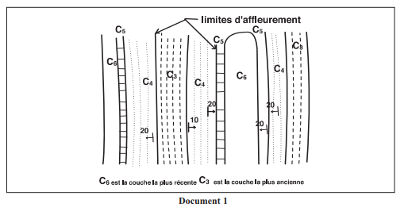
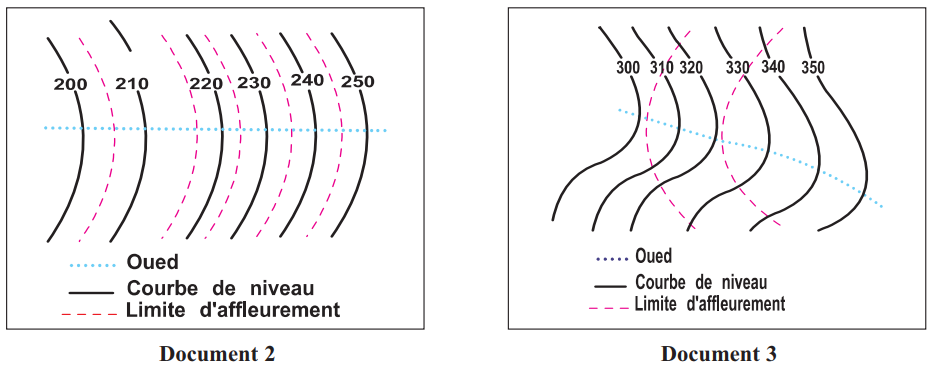

INGÉNIEUR Mohamed CHAGRAOUI
ENSEIGNANT SVT · CANDIDAT CAPES SVT 2026 · TUNISIE
Sciences de la Vie et de la Terre
🎯 Pourquoi ce chapitre ? — Objectifs du programme
Selon le programme officiel tunisien (Thème 1 — Exploitation rationnelle des ressources géologiques), ce chapitre vise à :
Lire une carte géologique et en tirer divers renseignements géologiques.
Analyser une carte géologique régionale ainsi qu'une coupe géologique pour localiser les affleurements, déterminer le pendage, repérer les plis et les failles.
Localiser les ressources géologiques sur la carte.
🔗 Ce chapitre est le carrefour du Thème 1 : il synthétise tout ce que tu as appris dans Ch.1 (carte topo) et Ch.2 (strates, plis, failles, fossiles) et te donne l'outil qui sert à exploiter les ressources géologiques dans Ch.4 (eau), Ch.5 (phosphates) et Ch.6 (pétrole).
📚 Préacquis — Ce que tu dois maîtriser
Ch.1 — Carte topographique : courbes de niveau, équidistance, profil topographique, échelle
Ch.1 — Affleurement : site où la roche du sous-sol apparaît en surface
Ch.2 — Strates : couches sédimentaires empilées, principe de superposition
Ch.2 — Plis : anticlinal (courbure vers le haut), synclinal (courbure vers le bas)
Ch.2 — Failles : normale (étirement) et inverse (compression)
Ch.2 — Fossiles stratigraphiques : permettent de dater les formations

Doc. 1 p.31 — Une carrière de calcaire à Djebel Nahli
❓ Question directrice unique
→ Comment exploite-t-on une carte géologique ?
Ce chapitre est court (6 pages) mais fondamental : il synthétise tout ce que tu as appris dans Ch.1 et Ch.2 et te donne l'outil qui sert à exploiter les ressources géologiques dans Ch.4, Ch.5 et Ch.6.
🧠 Comprendre avant de mémoriser
La carte géologique, c'est la carte topographique (Ch.1) + les informations du sous-sol (Ch.2). Elle est le pont entre ce qu'on voit en surface et ce qui est en profondeur. C'est l'outil de base de tout géologue pour localiser les ressources naturelles.
Clique sur chaque notion pour explorer · Les pièges et les connexions avec le manuel sont révélés
🗺️
C'est quoi exactement ?
Définition et composantes
🔬
Lire les symboles
Couleurs, notation, pendage
✂️
La coupe géologique
De la carte au sous-sol
⚠️
2 Pièges classiques
Erreurs fréquentes à éviter
🔗
Liens avec le manuel
Ch.1 + Ch.2 + Ch.4-5-6
🗺️ La carte géologique — c'est quoi exactement ?
Une carte géologique = une carte topographique sur laquelle on a ajouté des informations sur les roches qui affleurent. Chaque couleur représente une formation géologique d'un âge et d'une nature donnés. Les lignes représentent les contacts entre formations, les failles et les pendages.
Elle est réalisée à partir d'observations sur le terrain : le géologue parcourt la zone, note les types de roches, leur âge (grâce aux fossiles), leur pendage, les failles visibles... Tout ça est ensuite reporté sur le fond topographique.
💡 Différence carte topo / carte géologique
La carte topographique (Ch.1) = surface du terrain uniquement (relief, routes, végétation, cours d'eau). La carte géologique = carte topo + nature des roches + age + structures (plis, failles) + gisements. La carte géologique contient donc la carte topo. Elle permet de passer de la 2D (surface) à la 3D (sous-sol).
Composante
Ce qu'elle indique
Utilité pratique
Couleurs
Nature et âge de chaque formation géologique
Reconnaître les types de roches en surface
Limites d'affleurement
Contact entre deux formations différentes
Délimiter les zones de chaque type de roche
Symboles de pendage
Angle et direction d'inclinaison des couches
Savoir si les couches sont horizontales ou inclinées
Tracés de failles
Cassures avec déplacement dans le sous-sol
Repérer les zones à risque et les aquifères
Gisements
Localisation des ressources exploitables
Exploitation minière, pétrolière, hydraulique
🔬 Lire les symboles — Notation et Pendage
Chaque formation géologique est repérée par une lettre + un exposant selon un code international. La lettre indique le système (grande période), l'exposant indique l'étage (subdivision).
Cliquer sur une notation pour comprendre
C¹C²J¹e¹Q
C¹ → C = Crétacé (Secondaire) · exposant 1 = Albien (étage du Crétacé). Âge environ 100–113 millions d'années. Roches typiques : calcaires, marnes, grès.
C² → C = Crétacé (Secondaire) · exposant 2 = Cénomanien (étage du Crétacé). Âge environ 93–100 Ma. Plus récent que C¹.
J¹ → J = Jurassique (Secondaire) · exposant 1 = Lias (étage du Jurassique). Âge environ 175–201 Ma. Plus ancien que le Crétacé.
e¹ → e = Éocène (Tertiaire) · exposant 1 = Éocène inférieur. Âge environ 48–55 Ma. C'est la période des phosphates tunisiens !
Q → Quaternaire. Les formations les plus récentes (0–2 Ma). Souvent en surface, alluvions, dépôts récents.
Le Pendage — l'inclinaison d'une couche
Pendage
Définition
Sur la carte
= 0°
Couche horizontale
Limites d'affleurement parallèles aux courbes de niveau
> 0°
Couche inclinée
Limites d'affleurement coupent les courbes de niveau
= 90°
Couche verticale
Limites d'affleurement droites, indépendantes du relief
💡 La règle des V pour les couches inclinées
Quand une couche inclinée est traversée par une vallée, les limites d'affleurement forment un V dont la pointe indique le sens du pendage. Si le V pointe dans le sens de la vallée (amont), les couches plongent vers l'aval. Cette règle permet de lire le pendage directement sur la carte.
Comparaison couches horizontales (limites parallèles aux courbes) vs inclinées (limites coupent les courbes)
✂️ La Coupe Géologique — du 2D au 3D
La coupe géologique est la représentation verticale des couches du sous-sol. Elle est construite à partir de la carte géologique, exactement comme le profil topographique (Ch.1) est construit à partir de la carte topo — mais en ajoutant les informations géologiques.
Méthode de construction
Étape
Action
1
Tracer le trait de coupe AB sur la carte géologique
2
Construire le profil topographique (comme Ch.1)
3
Reporter les limites des affleurements intersectés par AB
4
Prolonger les couches en profondeur selon leur pendage
5
Reporter les failles et structures tectoniques
6
Colorier chaque formation comme sur la carte
Passage carte géologique → coupe géologique
💡 Coupe géologique vs Profil topographique
Le profil topographique (Ch.1) montre uniquement le relief en surface (forme du terrain). La coupe géologique montre en plus la structure du sous-sol : les couches géologiques, leur pendage, les plis, les failles. C'est le profil topo enrichi de toute la géologie en profondeur.
⚠️ 2 Pièges classiques
⚠️ Piège 1 — Affleurement ≠ toute la formation géologique ▼
Un affleurement, c'est l'endroit où la roche perce en surface. Mais la même formation géologique peut s'étendre sur des dizaines de kilomètres en profondeur sans affleurer partout — elle peut être recouverte par d'autres formations plus récentes. Sur la carte, on ne voit que les affleurements, pas toute l'extension souterraine de la formation. La coupe géologique est nécessaire pour visualiser la 3D.
⚠️ Piège 2 — Limites parallèles aux courbes ≠ toujours horizontal ▼
La règle dit : limites parallèles aux courbes de niveau → couches horizontales. MAIS dans une région très accidentée ou très plissée, des couches légèrement inclinées peuvent localement sembler parallèles aux courbes. Il faut toujours vérifier avec les symboles de pendage sur la carte. Les symboles de pendage (petite barre avec flèche) sont la source la plus fiable pour connaître l'inclinaison réelle d'une couche.
🔗 Ce chapitre — le carrefour de tout le Thème 1
La carte géologique est l'outil qui applique Ch.1 et Ch.2 et qui prépare Ch.4, Ch.5 et Ch.6. C'est le chapitre pivot du Thème 1.
← Chapitre 1 — Carte topographique
Fond topographique
La carte géologique utilise la carte topo comme base. Courbes de niveau, profil topographique → nécessaires pour construire la coupe géologique.
← Chapitre 2 — Stratigraphie & Tectonique
Plis, failles, fossiles, pendage
Les structures apprises au Ch.2 (anticlinaux, synclinaux, failles) se retrouvent représentées sur la carte géologique sous forme de symboles et de couleurs.
→ Chapitre 4 — Ressources en eau
Carte hydrologique
La carte géologique permet d'identifier les roches perméables (grès, calcaires fissurés) et imperméables → localiser les aquifères et les sources. La carte hydrologique dérive de la carte géologique.
→ Ch.5 + Ch.6 — Phosphates et Pétrole
Localisation des gisements
La carte géologique permet de repérer les formations éocènes (phosphates) et les anticlinaux (pièges à pétrole). Elle est l'outil n°1 de la prospection minière et pétrolière.
💭 Questions de réflexion
1. Sur une carte géologique, les limites d'une formation géologique sont parallèles aux courbes de niveau. Quelle conclusion tires-tu sur l'inclinaison des couches ? Et que se passerait-il si on creusait un puits vertical à cet endroit ?
Limites parallèles aux courbes → couches horizontales (pendage = 0°). Si on creuse un puits vertical, on traverserait les couches dans l'ordre de leur superposition : la plus récente en surface, les plus anciennes en profondeur. Chaque changement de couleur sur la carte correspond à un changement de formation en profondeur. C'est exactement comme ça que les géologues prédisent ce qu'ils vont trouver avant de forer.
2. Un géologue observe que sur une carte géologique, une formation éocène (e¹) affleure dans le coeur d'une structure anticlinale. Les flancs montrent des formations plus récentes (e², m pour Miocène). Est-ce cohérent ? Pourquoi ?
Oui, parfaitement cohérent ! Dans un anticlinal, la couche centrale est la plus ancienne (Ch.2). L'Éocène (e¹) est plus ancien que le Miocène (m) → l'Éocène au coeur + formations plus récentes sur les flancs = signature classique d'un anticlinal sur une carte géologique. C'est une manière de reconnaître les anticlinaux sur la carte : si le coeur montre les couleurs les plus "vieilles", c'est un anticlinal. Si le coeur montre les couleurs les plus "récentes", c'est un synclinal.
🗺️ Activité — Les Éléments d'une Carte Géologique (p.32–33)

Doc. 2 p.32 — Extrait de la carte géologique de l'Ariana et coupe géologique
1. Les Composantes d'une Carte Géologique
Définition : la carte géologique est une projection des affleurements de roches sur un plan comportant un fond topographique. Elle présente la nature, l'âge et les structures des formations géologiques.
Élément
Ce qu'il représente
Couleurs
Chaque couleur = une formation géologique d'un âge précis
Notation (ex: C¹)
Lettre = système · Exposant = étage
Limites d'affleurement
Intersection des couches avec la surface topographique
Symboles de pendage
Angle d'inclinaison et direction des couches
Tracés de failles
Lignes marquant les cassures tectoniques
Gisements
Symboles spéciaux pour ressources exploitables
💡 La Notice — à quoi ça sert ?
La notice est le livret qui accompagne la carte géologique. Elle contient : la description détaillée de chaque formation (lithologie, fossiles, épaisseur), l'histoire tectonique de la région, les ressources naturelles identifiées et leur mode d'exploitation. Sans la notice, la carte seule est difficile à interpréter en détail.
Schéma d'une carte géologique simplifiée avec ses éléments
✏️ Mini-quiz — Composantes
1. Sur une carte géologique, chaque correspond à une formation géologique d'un âge et d'une nature précis.
2. La notation C¹ signifie : C = et l'exposant 1 = .
3. La notice d'une carte géologique contient .
2. Le Pendage et les Affleurements — Règle fondamentale
Le pendage est l'angle que fait une couche avec un plan horizontal. C'est l'inclinaison de la couche. Il se lit directement sur la carte grâce aux symboles et indirectement grâce à la position des limites d'affleurement par rapport aux courbes de niveau.
Règle clé (exercice 2, p.36)
Observation sur la carte
Conclusion
Limites d'affleurement parallèles aux courbes de niveau
Couches horizontales (pendage = 0°)
Limites d'affleurement coupent les courbes de niveau
Couches inclinées (pendage > 0°)
💡 Pourquoi cette règle fonctionne-t-elle ?
Une couche horizontale a la même altitude partout. Les courbes de niveau relient aussi des points à la même altitude. Donc les contacts (limites) entre une couche horizontale et la surface suivent exactement les courbes de niveau → parallèles. À l'inverse, une couche inclinée coupe des altitudes différentes → ses contacts avec la surface topographique coupent les courbes de niveau.
💡 Comment identifier un anticlinal / synclinal sur une carte ?
Anticlinal : les couleurs les plus anciennes sont au centre (coeur), entourées de couleurs plus récentes. Les pendages s'écartent du centre vers l'extérieur. Synclinal : les couleurs les plus récentes sont au centre, entourées de couleurs plus anciennes. Les pendages convergent vers le centre.
Gauche : limites parallèles aux courbes → couches horizontales. Droite : limites coupent les courbes → couches inclinées
✏️ Mini-quiz — Pendage et affleurements
1. Le pendage d'une couche est .
2. Sur une carte géologique, si les limites d'affleurement sont parallèles aux courbes de niveau, les couches sont .
3. Sur une carte géologique, un anticlinal se reconnaît par des couleurs .
3. La Coupe Géologique — La 3D du sous-sol
Définition : la coupe géologique est la représentation d'une coupe verticale des roches. Elle matérialise la superposition et les structures géologiques (plis, failles) en profondeur.
Élément de la coupe
Origine
Profil topographique
Construit à partir de la carte topo (Ch.1)
Limites entre formations
Reportées depuis les intersections sur la carte géo
Inclinaison des couches
Déduite du pendage indiqué sur la carte
Failles et plis
Tracés depuis les symboles de la carte (Ch.2)
Couleurs des formations
Reprises de la légende de la carte géologique
💡 Utilité pratique de la coupe géologique
La coupe permet de visualiser ce qui est en profondeur là où on ne peut pas voir directement. Elle est indispensable pour : localiser une nappe phréatique (Ch.4), estimer la profondeur d'un gisement de phosphates (Ch.5), repérer un anticlinal pouvant piéger du pétrole (Ch.6), décider où forer un puits, choisir l'emplacement d'un barrage ou d'un tunnel.
Coupe géologique montrant pli anticlinal et faille
📌 Retenons (bilan p.34 + objectifs du programme)
Carte géologique :
projection des affleurements de roches sur un fond topographique. Présente nature, âge, structures tectoniques et gisements. [Obj. : Lire une carte géologique]
Affleurement :
site où la roche constituant le sous-sol apparaît à la surface.
Pendage :
angle que fait une couche avec un plan horizontal. [Obj. : Déterminer le pendage des couches]
Coupe géologique :
représentation verticale des couches du sous-sol sur un profil topographique. [Obj. : Repérer les plis et les failles]
Notice :
commentaire de la carte géologique (terrains, tectonique, ressources). [Obj. : Localiser les ressources géologiques]
✏️ Mini-quiz — Coupe géologique
1. La coupe géologique est construite à partir de la carte géologique. Elle montre .
2. La coupe géologique est à la carte géologique ce que le .
3. L'utilité principale de la carte géologique est de .
📋 Bilan (p.34)
1La carte géologique est une sur un plan comportant un fond . Elle présente les .
🔑 Les 4 informations d'une carte géologique
1. Limites des affleurements (intersections roche/surface) · 2. Nature et âge des formations (couleurs + notations) · 3. Structures tectoniques (failles, pendages, plis) · 4. Gisements exploités (minéraux, eau, hydrocarbures).
2La coupe géologique réalisée à partir de la carte géologique est une représentation d'une coupe des roches. Elle matérialise la . Un est le site où la roche du sous-sol apparaît en surface. Le est l'angle que fait une couche avec un plan horizontal.
3La carte géologique est un outil précieux pour . La présence d'anciens bassins de sédimentation, la nature des roches et la indiquent les sites potentiels des gisements. L'identification des permet d'éviter la construction sur des zones à risque sismique.
🔑 2 utilisations pratiques essentielles
1. Localiser les ressources : les anticlinaux = pièges à pétrole · les formations éocènes = phosphates · les roches perméables = aquifères. 2. Éviter les risques : zones de failles = risques sismiques et glissements · nature du sous-sol = stabilité pour constructions (barrages, maisons, routes).
🃏 Flashcards — Vocabulaire clé
✏️ QCM — Manuel (p.35) + Questions complémentaires
Vérification question par question. Cliquez sur "Vérifier" après chaque réponse. Les questions du manuel sont en cases à cocher (plusieurs réponses possibles).
📋 QCM du manuel — Page 35
📝 QCM complémentaires — Approfondissement
📝 Exercices interactifs

Doc. 1 p.36 — Carte géologique avec anticlinal et synclinal

Doc. 2 et 3 p.36 — Cartes géologiques pour l'exercice 2
🗺️ Ex.1 — Identifier anticlinal et synclinal sur une carte géologique (exercice 1, p.36)
Une carte géologique présente une structure avec des formations géologiques notées : centre = J¹ (Jurassique) entouré de C¹ (Crétacé), puis e¹ (Éocène) en bordure. Les pendages s'écartent du centre.
Question
Réponse
La formation la plus ancienne (J¹) est au centre. C'est un :
Si le centre montrait e¹ (Éocène) entouré de J¹ (Jurassique) plus ancien, ce serait un :
Les pendages qui s'écartent du centre confirment que c'est un :
Pour former un schéma d'un pli, les forces qui l'ont créé sont des contraintes de :
Sur une carte géologique, on observe les relations entre limites d'affleurement et courbes de niveau dans deux zones différentes (documents 2 et 3 p.36).
Observation
Conclusion
Justification
Doc.2 — Limites d'affleurement parallèles aux courbes de niveau
Doc.3 — Limites d'affleurement coupent les courbes de niveau
🌍 Ex.3 — Utilité de la carte géologique
D'après le bilan p.34 — compléter le texte sur l'utilité de la carte géologique.
La carte géologique est un outil précieux pour situer les . La présence d'un ancien , la nature des roches et la structure du sous-sol indiquent les sites potentiels des gisements naturels ().
L'identification des lignes de et de la nature du sous-sol permet d'éviter la construction sur des zones à risque d'.
Sur une carte géologique, un (coeur plus ancien) peut indiquer un piège potentiel à , tandis que les formations de l' signalent des zones potentielles de .